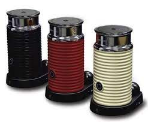
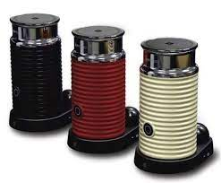

NOSOTROS

Como amantes del buen Café, nos dedicamos a ofrecer calidad y frescura de sabores con nuestros mejores productos. Somos una empresa familiar que ofrece no solo el mejor Café, sino accesorios para que preparen ustedes mismos en sus casas
Les presentamos toda nuestra linea de productos de cafe del tiempo:


 
